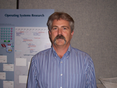

STAFF
DIRECTORY
|
Cecilia
Aragon
|
Unit Administrator
cgaragon@unm.edu
Room 1004
505.277.8268
Cecilia directs
and oversees administrative and operational programs for the Center.
She manages organization-wide strategic and fiscal activities/planning,
oversees human resources development and management, and provides administrative
activities in support of the Center and the Resident Research Groups.
In addition, she administers building security and safety procedures;
coordinates remodeling activities and monitors and maintains space allocation.
|
|
Systems Analyst II
cychan@hpc.unm.edu
Room G102-D
505.277.8339
Chun-Yu is the point of contact for the Center's wired
& wireless Network, Access Grid and Mail Server. He monitors and
maintains all Windows/Mac desktop and laptop computers. In addition,
he is the liaison for the Center's Resident Research Groups.
|
|
Program Coordinator
dina@unm.edu
Room 1000-B
505.277.7020
Dina serves as a
principal liaison for the (CSE) Computational Science & Engineering
Certificate Program. She coordinates activities of support for the Center's
Director and Deputy Director. Serves as point of contact for scheduling
meeting facilities (seminar, workshop and atriums). In addition, she
is responsible for the coordination and development of promotional materials,
newsletters, and brochures.
|
|
Database Administrator
jagalb@hpc.unm.edu
Room 1006
505.277.9547
Jared gathers data
about machine usage. He is the primary developer of the Albuquerque
Integrated Reporting System (AIRS - see airs.sourceforge.net).
He also maintains the building inventory, and other important databases.
|
|
Sr. Applications
Support Analyst
royh@hpc.unm.edu
Room 1114
505.277.8348
Roy is the point
of contact for user requests regarding assistance with software/coding
issues and code performance problems. In addition, he is the primary
for Pablano and JS20 user community, all Apple Clusters (Hammer and
Yenta), and all backup and restores.
|
Barney Maccabe

|
Director
maccabe@cs.unm.edu
Room 2003
505.277.8242
|
|
HPC Systems Engineer
III
download@hpc.unm.edu
Room G101
505.277.8210
James E. Prewett
leads the systems group at UNM HPC. He is also involved in log analysis
research for cluster systems and larger networks through the
<a href="http://www.hpc.unm.edu/~download/LoGS/">LoGS
project</a>.
|
|
Chief Scientist
bsmith@hpc.unm.edu
Room 2001
505.277.8337
|
|
Deputy Director
thomas@phys.unm.edu
Room 2004-B
505.277.8245
|
|
HPC Systems Engineer
II
warren@hpc.unm.edu
Room G102-E
505.277.8259
Aron is the primary
point of contact for the Los Lobos and Ristra Cluster Administration,
fileserver and Firewall/IDS administration. In addition, Aron ensures
Grid3/OSG functionality, and maintains perimeter and is our Secondary
Security Official (Jim Prewett being the primary). As our systems liaison,
he is actively involved in the UNM IT Governance and campus wide workgroups.
Aron is also a UNM instructor (CS 484- Unix Administration and Tools)
and an instructor for the Linux Clusters Institute.
http://www.hpc.unm.edu/~warren/
|
|
Sr. Database Administrator
smwilson@hpc.unm.edu
Room 2005-D
505.277.2051
Susan is a senior
level database administrator who provides general database support for
interdisciplinary bioinformatics projects for the Center and for the
Cancer Research and Treatment Center (CRTC) Shared Resource for Bioinformatics
and Computational Biology (SRBCB).
|